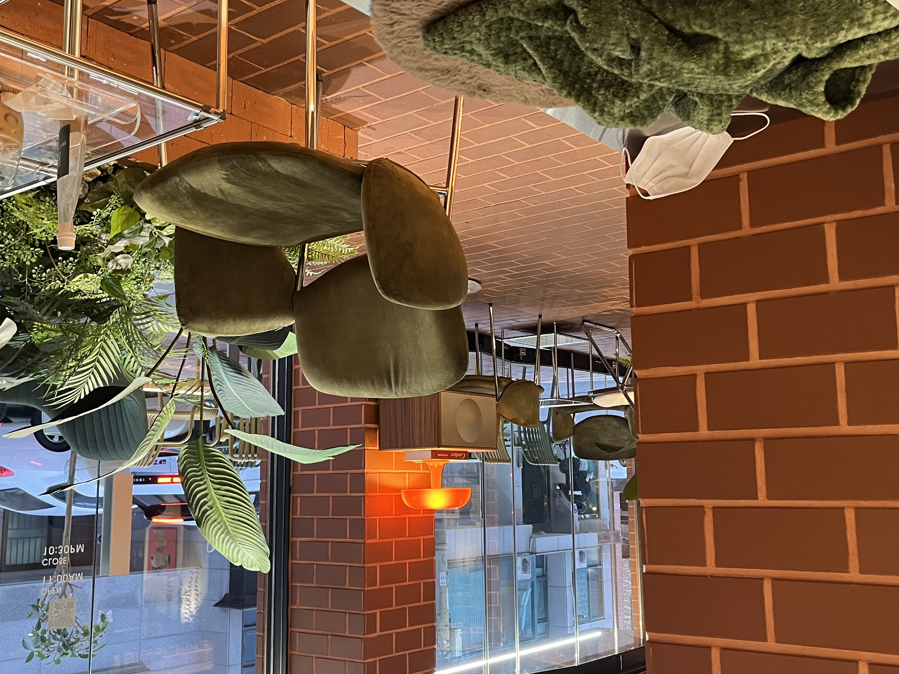

위치: 서울특별시 성동구 행당동 19-96 3층
영업시간: 평일 11:00~22:30 / 주말(공휴일) 11:30~22:00
주요 메뉴: 아메리카노(4.5) / 카페라떼(5.0) / 바닐라라떼 (5.5) / 아몬드 라떼(5.5)
이모네 북어찜 위에 위치한 카페로 알 사람은 다 아는 카페. 내부가 넓고 쾌적해 팀플이나 시험공부를 하러 찾아오는 한양대생들이 많다. 테이블이 높아 오래 앉아있기 편하고 맛있는 커피와 디저트로 당충전까지 하기 좋다. 한양대역과도 가까워 공강시간에 시간 때우기 좋은 카페.
인스타그램
위치: 서울특별시 성동구 마조로 15-16 1층
영업시간: 매일 12:00~23:00 (일요일: ~21:30)
주요 메뉴: 아메리카노(4.0) / 카페라떼(4.5) / 호말라떼(5.0)
한양대역 근처에 있는 레트로 감성의 카페. 카페가 넓은 편은 아니지만 쾌적하고 커피가 맛있다. 학교와 가까워 공강시간에 들르면 커피 한 잔의 여유를 즐길 수 있다. 반려동물 출입이 가능한 카페인 것도 장점 중 하나.
인스타그램
위치: 서울특별시 성동구 마조로 27 대광빌딩 2층
영업시간: 매일 07:00~01:00
주요 메뉴: 아메리카노(3.9) / 카페라떼(4.2) / 에이드(5.0)
왕십리역 6번출구 근처에 있는 크고 넓은 카페. 카페&펍이라는 이름에 걸맞게 맥주와 피자도 판매하고 있다. 새벽 1시까지 운영하기 때문에 밤늦게까지 과제를 한 후 자취방으로 복귀하기 좋다.
위치: 서울특별시 성동구 마조로9길 18
영업시간: 매일 09:00~23:00
주요 메뉴: 아메리카노(4.4) / 카페라떼((4.8) / 밀크 아인슈페너(5.5)
왕십리역 6번출구로 나오면 바로 보이는 카페. 2층까지 있어서 눈치보지 않고 오래 앉아있을 수 있는 카페. 디저트류도 너무 비싸지 않고 맛있어서 부담되지 않는다.

위치: 서울특별시 성동구 마조로 11길 13 1층
영업시간: 매일 11:00~22:30
주요 메뉴: 아메리카노(4.0) / 카페라떼(4.5) / 바닐라라떼(5.0) / 수제 밀크티(6.0)
왕십리역 6번출구 근처에 있는 벽돌 인테리어가 눈에 띄는 카페. 매장이 넓고 쾌적하여 카페에서 공부하는 한양대생들을 볼 수 있다. 학교와는 거리가 있지만 역과 가까운 만큼 접근성 좋은 카페.